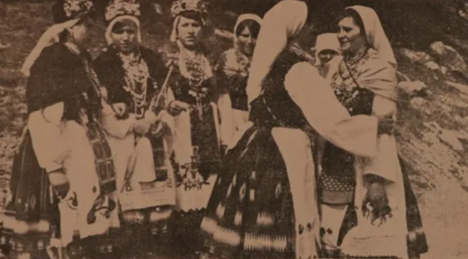

СÑеван СÑ. ÐокÑаÑаÑ: TpинаеÑÑа Ð ÑковeÑ (1906)
Stevan St. Mokranjac: Treizième Guirlande (1907)
"Ðз моÑе домовине - De mon pays"

ÐазаÑиÑе Ñ ÐеÑковÑÑ 1979. године - Lazarice à Leskovac en 1979
|
|
|
|
Ðезе ка пеÑмама 1 - 5 -oOo- Liens vers les chants 1 - 5

TpинаеÑÑа Ð ÑковeÑ
Ðзводи Ð¥Ð¾Ñ Ð Ð¢Ð-а ÐеогÑад. ÐиÑигенÑ: Ðладен ÐагÑÑÑ (маÑоÑ)
Ð¥Ð¾Ñ Ð Ð°Ð´Ð¸Ð¾-ÑелевизиÑе ÐеогÑад Ñед. Ðладен ÐагÑÑÑ (1. маÑ)
NOTE
|
ÐокÑаÑÐ°Ñ Ñе ÑаÑÑавио две ÑазлиÑиÑе веÑзиÑе 13. Ð ÑковеÑи. РазликÑÑÑ Ñе по ÑоналиÑеÑима и ÑазÑади деÑаÑа. ÐомбинаÑиÑа пеÑама одабÑÐ°Ð½Ð¸Ñ Ð·Ð° ово ÑаÑÑоÑи Ñе од две ÑпоÑе и две бÑзе пеÑме, коÑе Ñе певаÑÑ Ð½Ð°Ð¸Ð·Ð¼ÐµÐ½Ð¸Ñно. Ð ÑÐºÐ¾Ð²ÐµÑ Ð¿Ð¾ÑиÑе ÑÑжном пеÑмом âÐевоÑка ÑÑÐ½Ð°ÐºÑ Ð¿ÑÑÑен повÑаÑалаâ и наÑÑавÑа Ñе веÑелом âÐÑ, Ñбава мала момоâ. ТÑеÑа пеÑма âСлавÑÑ Ð¿Ð¸Ð»Ðµâ Ñ ÑÑпÑоÑноÑÑи Ñе Ñа завÑÑном дÑÑ Ð¾Ð²Ð¸Ñом Ñемом âÐÑÑе, кÑÑе, нова колаâ. ÐзвоÑ: Ðикипедиjа |
Mokranjac a composé deux versions différentes de la 13e Rukovet. Elles diffèrent par leurs tonalités et l'élaboration de certains détails. La combinaison de chants sélectionnés à cet effet se compose de deux airs lents et de deux airs rapides chantés en alternance. La 13ème Rukovet commence par l'élégie "Devojka junaku prsten povraÄala" et continue avec le joyeux "Oj, ubava mala momo". Le troisième chant "Slavuj pile" contraste avec le thème final enjoué de "Krce, krce, nova kola". Source: Wikipédia |